VTEX
VTEX es una plataforma de comercio digital que te permite crear una tienda en línea con funcionalidades listas para utilizar rápidamente. Para más información, consulta la página oficial de VTEX.
Prerrequisitos
- Necesitas una cuenta activa en PayU Latam.
- Necesitas una cuenta activa en PaymentsOS. Si no tienes una cuenta, haz clic aquí para crearla.
Todos los comercios que requieran integrar PayU con VTEX deben tener una cuenta en PaymentsOS. - Necesitas una cuenta con suficientes permisos para acceder al admin de VTEX. Esta cuenta debe tener habilitado la autenticación en dos factores.
Procedimiento de configuración
El procedimiento para habilitar en VTEX los medios de pago que procesamos en nuestra plataforma se divide en dos pasos. Antes de continuar, asegúrate de cumplir con los prerrequisitos anteriores.
1. Configurar tu cuenta de PaymentsOS
La integración de PayU Latam con VTEX se realiza utilizando PaymentsOS como middleware. Como primer paso, necesitas configurar en tu cuenta de PaymentsOS los siguientes objetos.
- Una configuración de Proveedor.
- Una Unidad de Negocio.
- Un WebHook.
Puedes configurar estos objetos usando una de las siguientes opciones:
- Configurar la cuenta utilizando Postman.
- Configurar la cuenta manualmente utilizando el Panel de Control de PaymentsOS.
Configurar la cuenta utilizando Postman
Sigue estos pasos para configurar tu cuenta utilizando Postman.
- Haz clic en el siguiente botón para importar nuestra colección en Postman (puede que necesites refrescar la página si el botón no funciona).
-
Luego de ejecutar la colección, necesitas configurar los globales. Descarga el archivo de globales aquí.
-
En la colección de Postman, haz clic en Import junto al nombre de tu workspace y localiza el archivo json descargado previamente.
-
Cuando termine, haz click en Import.
-
Es obligatorio ejecutar los métodos de la colección en el orden mostrado. Primero, haz click en el método
POSTllamado1. Loginy abre la pestaña Body.
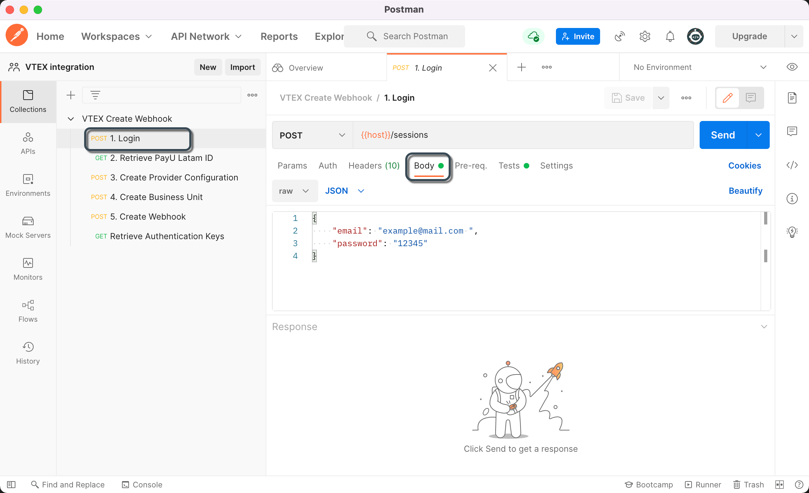
-
Ingresa el correo electrónico (email) y la contraseña (password) de tu cuenta de PaymentsOS. Luego, haz clic en Send.
-
Si el inicio de sesión fue correcto, los datos de autenticación son asignados en el segundo método.
Haz clic en el métodoGETllamado2. Retrieve PayU Latam ID. -
En la esquina superior derecha, haz clic en el ícono de ojo y localiza el parámetro
env. Luego, haz clic en el ícono de lápiz e ingresatestsi estás procesando en el ambiente de pruebas oliveen caso contrario.
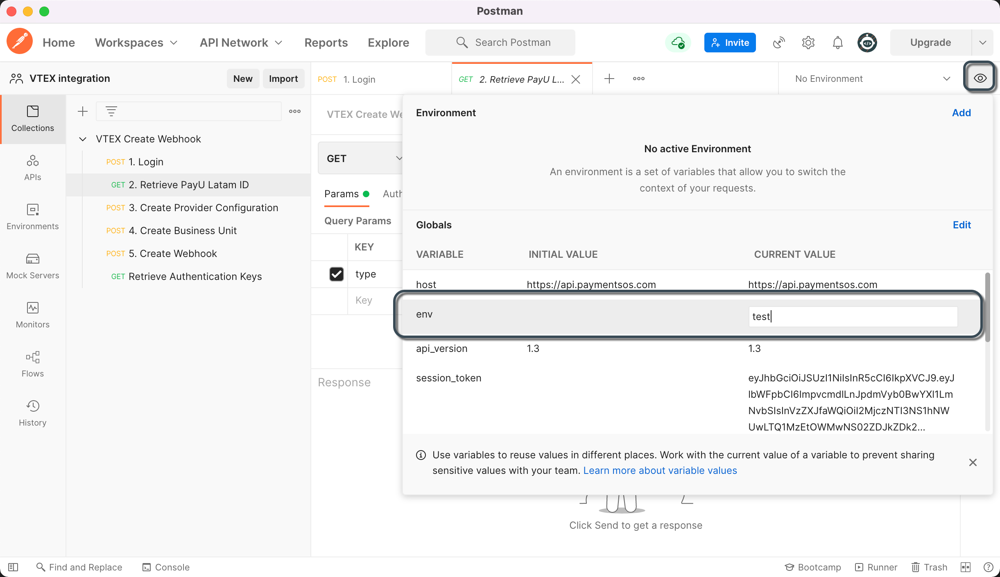
-
Una vez configurado, haz clic en Send.
-
Haz clic en el método
POSTllamado3. Create Provider Configuration, este método crea la Configuración de proveedor en PaymentsOS. Luego, ve a la pestaña Body.
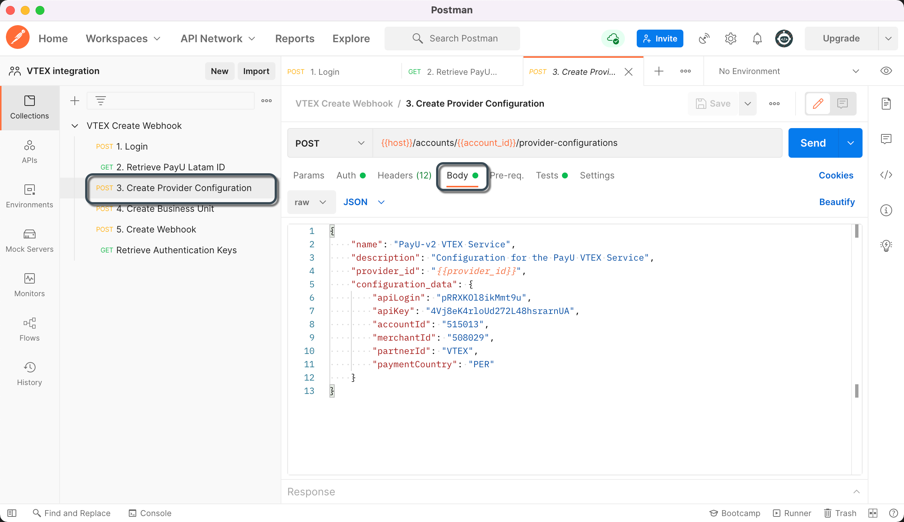
Ingresa la siguiente información:
| Parámetro | Descripción |
|---|---|
| name | Ingresa un nombre para la Configuración de proveedor. |
| description | Ingresa una descripción significativa para la Configuración de proveedor. Este valor es opcional. |
| configuration_data.apiLogin | Usuario o login entregado por PayU. Cómo obtengo mi API Login |
| configuration_data.apiKey | Contraseña entregada por PayU. Cómo obtengo mi API Key |
| configuration_data.accountId | ID de la cuenta de PayU de acuerdo al país en el que vas a vender. |
| configuration_data.merchantId | ID de tu comercio en PayU Latam. |
| configuration_data.paymentCountry | País de procesamiento en formato ISO 3166 Alpha-3. |
Nota
El parámetroprovider_id es llenado automáticamente por la respuesta del método 2. Retrieve PayU Latam ID. No cambies este valor.
- Haz clic en el método
POSTllamado4. Create Business Unit, este método crea la Unidad de Negocio en PaymentsOS. Luego, ve a la pestaña Body.
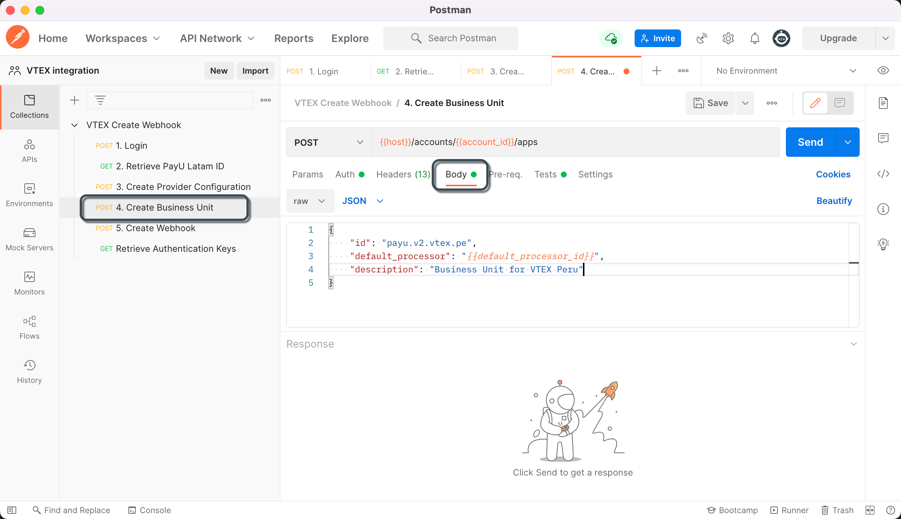
Ingresa la siguiente información:
| Parámetro | Descripción |
|---|---|
| id | Identificador de la Unidad de Negocio. Este id debe estar en minúsculas y sin espacios. Asegúrate de haber ingresado el valor correcto para el id ya que este valor no se puede actualizar después. |
| description | Ingresa una descripción significativa para la Unidad de Negocio. Este valor es opcional. |
Nota
El parámetrodefault_processor es llenado automáticamente por la respuesta del método 3. Create Provider Configuration. No cambies este valor.
- Haz clic en el método
POSTllamado5. Create Webhook, este método crea el WebHook en PaymentsOS. Este WebHook es la URL de confirmación que recibirá las notificaciones enviadas por VTEX cuando una transacción cambia de estado.
Luego, ve a la pestaña Body.
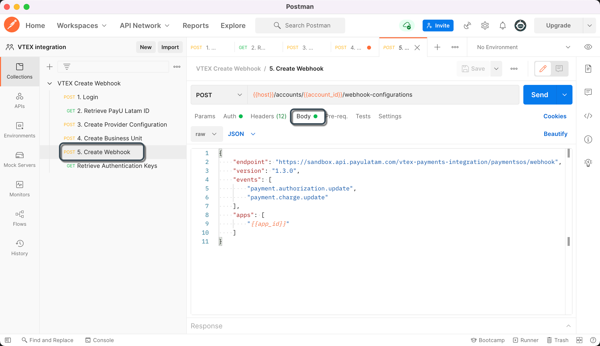
Asigna en el parámetro endpoint los siguientes valores de acuerdo con tu ambiente.
- Test:
https://sandbox.api.payulatam.com/vtex-payments-integration/paymentsos/webhook - Live:
https://api.payulatam.com/vtex-payments-integration/paymentsos/webhook
Deja los demás valores con su valor por defecto.
En este punto, has configurado tu cuenta de PaymentsOS como middleware, el siguiente paso es la configuración del proveedor de VTEX.
Configurar la cuenta manualmente utilizando el Panel de Control de PaymentsOS
Sigue estos pasos para configurar tu cuenta utilizando el panel de control de PaymentsOS.
- Crea la Configuración de proveedor.
En el panel de control de PaymentsOS, expande el menú Cuenta, luego selecciona Servicios.
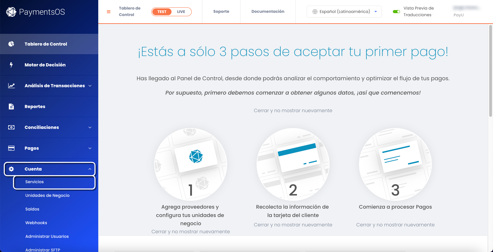
Utiliza el campo Buscar en la sección Crea una nueva configuración de proveedor e ingresa PayU para encontrar el proveedor PayU Latam.
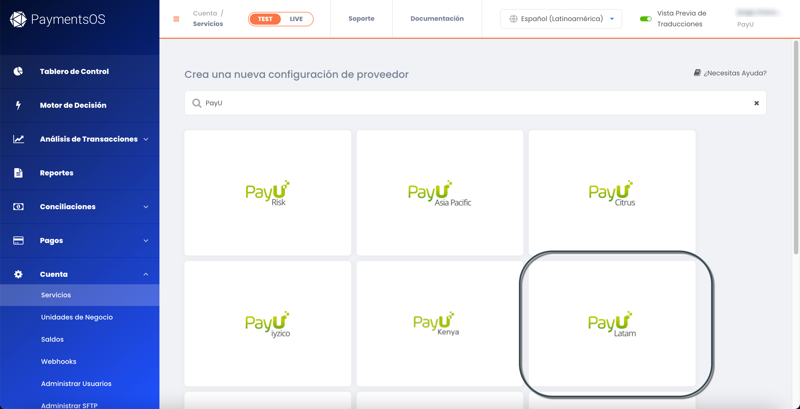
Ingresa la siguiente información para la Configuración de proveedor:
| Parámetro | Descripción |
|---|---|
| Nombre de Configuración | Ingresa un nombre para la Configuración de proveedor. |
| Descripción | Ingresa una descripción significativa para la Configuración de proveedor. Este valor es opcional. |
| apiLogin | Usuario o login entregado por PayU. Cómo obtengo mi API Login |
| apiKey | Contraseña entregada por PayU. Cómo obtengo mi API Key |
| accountId | ID de la cuenta de PayU de acuerdo al país en el que vas a vender. |
| merchantId | ID de tu comercio en PayU Latam. |
| paymentCountry | País de procesamiento en formato ISO 3166 Alpha-3. |
Cuando termines, has clic en Crear.
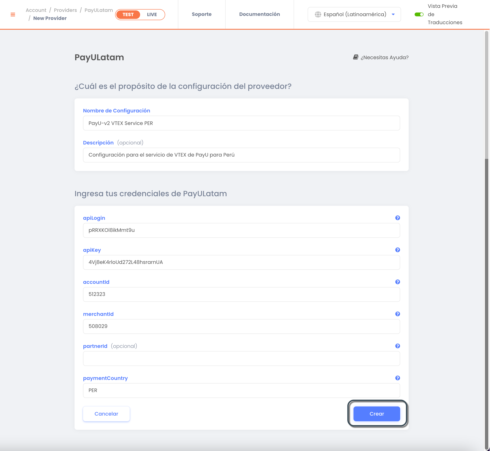
- Crea la Unidad de Negocio.
En el panel de control de PaymentsOS dashboard, expande el menú Cuenta, luego selecciona Unidades de Negocio.
Haz clic en el botón Crear una Unidad de Negocio e ingresa la siguiente información:
| Parámetro | Descripción |
|---|---|
| Nombre de la Unidad de negocio | Nombre de la Unidad de Negocio. Este nombre debe estar en minúsculas y sin espacios. Asegúrate de haber ingresado el valor correcto para el nombre ya que este valor no se puede actualizar después. |
| Descripción | Ingresa una descripción significativa para la Unidad de Negocio. Este valor es opcional. |
En la sección Selecciona un proveedor por defecto para esta Unidad de Negocio, escoge la Configuración de proveedor creada en el paso anterior.
Cuando termines, haz clic en Crear.
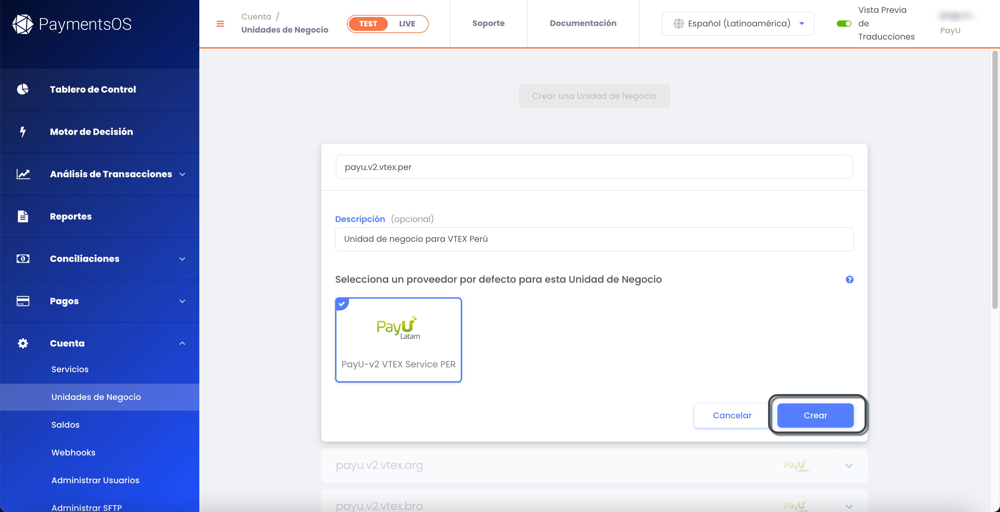
- Crea el Webhook. Este WebHook es la URL de confirmación que va a recibir las notificaciones enviadas por VTEX cuando una transacción cambia de estado.
De vuelta en el panel de control de PaymentsOS, expande el menú Cuenta y selecciona Webhooks.
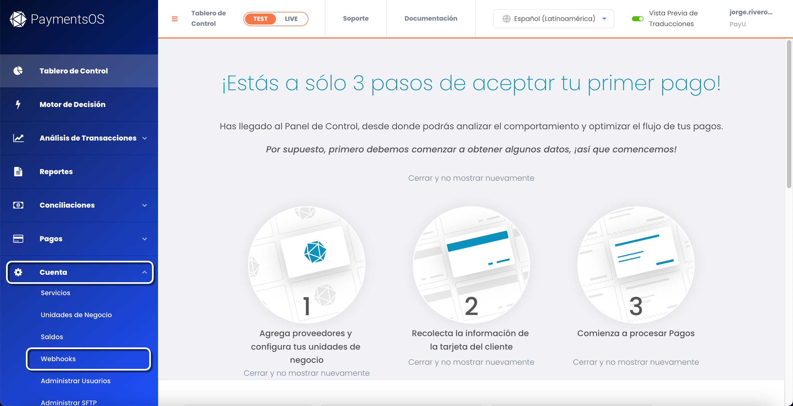
Haz click en el botón Crear URL de confirmación (Webhook) e ingresa la URL de acuerdo con tu ambiente:
- Test:
https://sandbox.api.payulatam.com/vtex-payments-integration/paymentsos/webhook - Live:
https://api.payulatam.com/vtex-payments-integration/paymentsos/webhook
En la tabla Alertas de eventos transaccionales, activa el evento Update para Authorization y Charge. Además, selecciona en el combo Unidades de Negocio Asociadas la Unidad de Negocio creada en el paso anterior.
Cuando termines, haz clic en Crear.
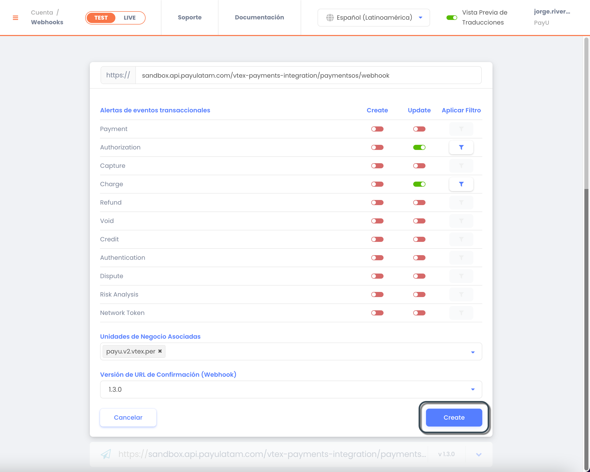
En este punto, has configurado tu cuenta de PaymentsOS como middleware, el siguiente paso es la configuración del proveedor de VTEX.
2. Configurar el proveedor de VTEX
Una vez hayas configurado tu cuenta de PaymentsOS, el siguiente paso es la configuración del proveedor de VTEX para cada método de pago. Para este paso, es obligatorio que tengas un usuario válido para acceder al admin de VTEX.
Configurar la afiliación de Gateway
Antes de configurar la afiliación de Gateway, asegurate de haber configurado FingerPrint para PayU. Para esto, consulta este artículo.
- En el admin de VTEX, expande el menú Pagos dentro del grupo Transacciones. Luego, selecciona Configuración.
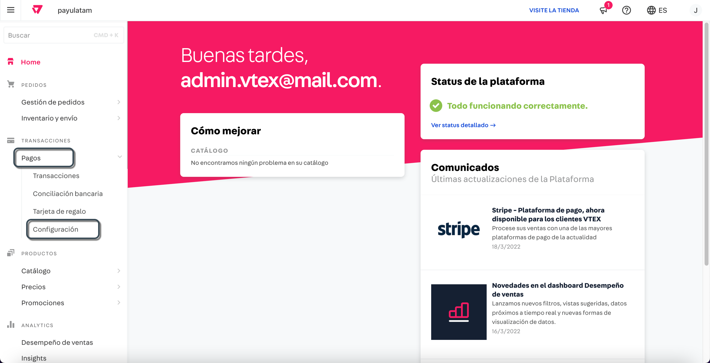
- Antes de continuar con las Condiciones de pago, debes crear una afiliación a nuestra pasarela (gateway). En el panel superior, haz clic en Afiliaciones de Gateway.
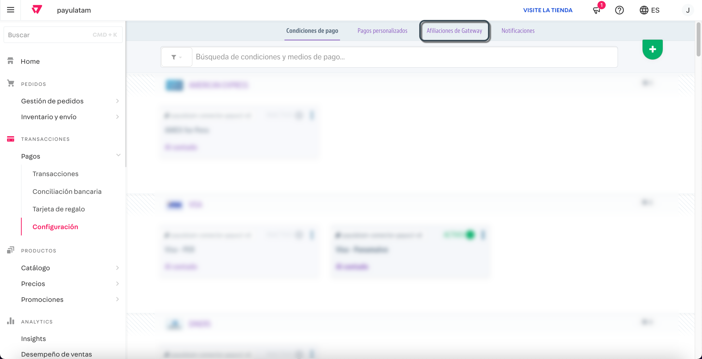
- Haz clic en el icono de más. Desplázate a la sección OTROS y localiza el conector PayUv2.
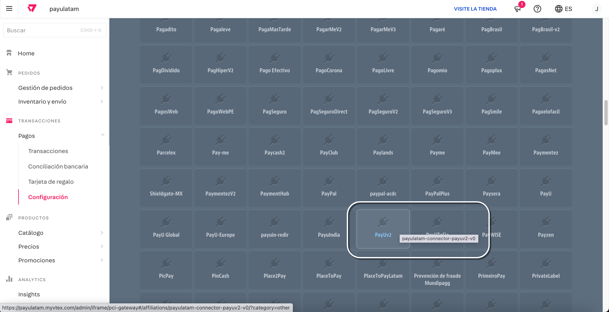
Importante
Asegúrate de seleccionar el conector PayUv2, el procedimiento explicado en esta guía aplica específicamente a este conector.- En la configuración del conector, debes instalarlo haciendo clic en el botón Instalar app. Luego, ingresa la siguiente información.
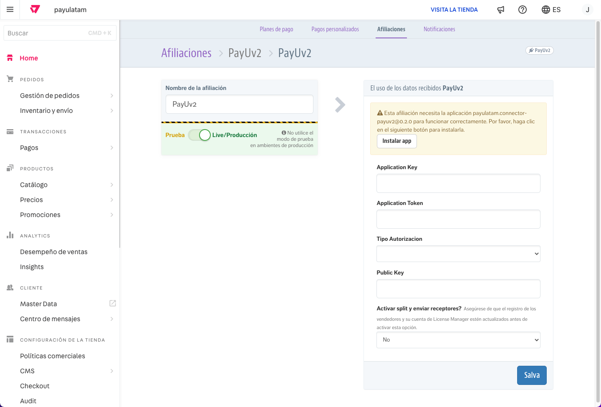
Nota
La información del conector puede ser obtenida a través de lo siguiente:
- Utilizando la colección de Postman.
Ejecuta el método Retrieve Authentication Keys asignando el parámetro globalenventestolivede acuerdo con tu ambiente de procesamiento. - Utilizando el Panel de Control de PaymentsOS.
Ve Cuenta > Unidades de negocio y selecciona la unidad de negocio que creaste en el paso anterior. Recuerda que debes utilizar el selector en la parte superior para escoger el ambiente de procesamiento.
Algunos valores están ocultos por defecto, haz clic en el icono de ojo para mostrarlos.
| Campo | Descripción |
|---|---|
| Nombre de afiliación | Nombre que quieres asignar para identificar la Afiliación de Gateway. |
| Selector de ambiente | Selecciona el ambiente donde quieres crear las transacciones. De acuerdo con la selección que hagas aquí, debes ingresar otros parámetros seleccionando el mismo ambiente en PaymentsOS. |
| Application Key | ID de la aplicación de la Unidad de negocio. |
| Application Token | Llave de API Privada de la Unidad de negocio. |
| Captura automática de pago | Selecciona cómo quieres realizar la captura (cobro) en tu afiliación.
Para más información, consulta Función de captura automática personalizada (en inglés) en la documentación de desarrolladores. EL valor por defecto de esta opción es siete (7) días luego de la aprobación. |
| Periodo de tiempo programado en horas para la captura automática | Este campo aparece cuando seleccionas Programado: establece cuándo se realizará la captura automática como el método de captura del pago; selecciona el periodo programado que deseas configurar de acuerdo con tu configuración. Este valor debe ser entero, por lo tanto, no se permiten decimales. |
| Tipo Autorizacion | Selecciona su tus transacciones de pago son ejecutadas en flujos de uno o dos pasos.
Consulta el siguiente enlace para conocer más de flujos de pago. |
| Public Key | Llave de API Pública de la Unidad de negocio. |
| ¿Activar split y enviar receptores? | Selecciona No en este campo. |
Cuando termines, haz clic en Guardar.
Configurar medios de pago
Configure los métodos de pago que se mostrarán en el sitio web para el pago. Consulte nuestros métodos de pago disponibles.
Importante
- PSE (Método colombiano de transferencia bancaria) no está soportado en esta versión del conector. Si necesitas configurar este método de pago, consulta el procedimiento para instalar la versión 1 del conector.
- PIX no está disponible en Brasil utilizando VTEX.
- Los cambios en las condiciones de pago pueden tardar hasta 10 minutos en aplicarse al flujo de pago.
Configurar tarjetas débito o crédito
De acuerdo con tu país de procesamiento, puedes configurar la afiliación que creaste para utilizar tarjetas crédito o débito*. Sigue estas instrucciones para agregar este medio de pago en tu tienda VTEX.
* El uso de tarjetas de débito depende de tu país de procesamiento.
Importante
Haz clic aquí si quieres saber cómo configurar tarjetas de marca compartida o privada- En la opción de Configuración (Transacciones > Pagos > Configuración), selecciona la pestaña Condiciones de pago y haz clic en el icono más.
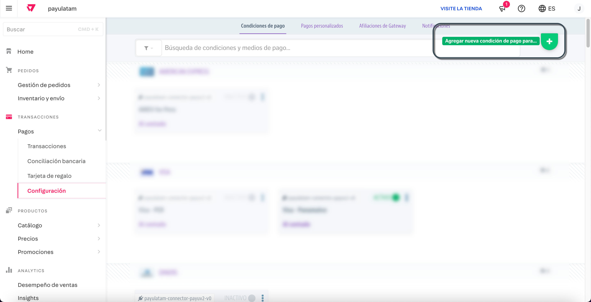
- Selecciona el medio de pago que deseas incluir. Los medios de pago están agrupados por su tipo.
Para nuestro ejemplo, seleccionamos American Express en la sección Tarjeta de Crédito.
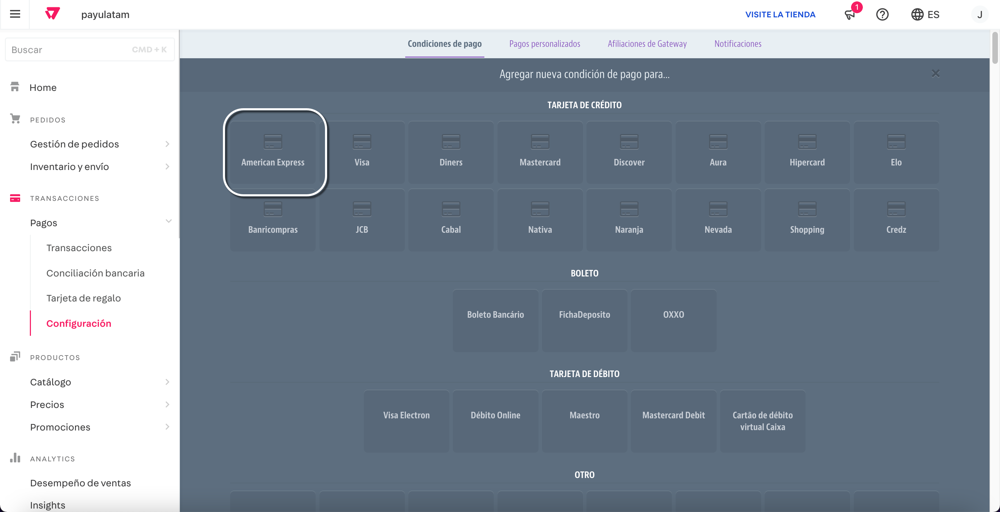
- Ingresa la siguiente información.
- Nombre de la Regla (para ayudar a identificar rápidamente): ingresa un nombre significativo para la condición de pago junto al medio de pago que seleccionaste.
- Status: selecciona el estado de la condición de pago. Solo puedes tener una condición de pago activa por medio de pago.
- Procesar con afiliación: select the gateway affiliation configured before.
- Pago al contado o en cuotas?: selecciona Al contado*.
*El procesamiento en cuotas no está soportado.
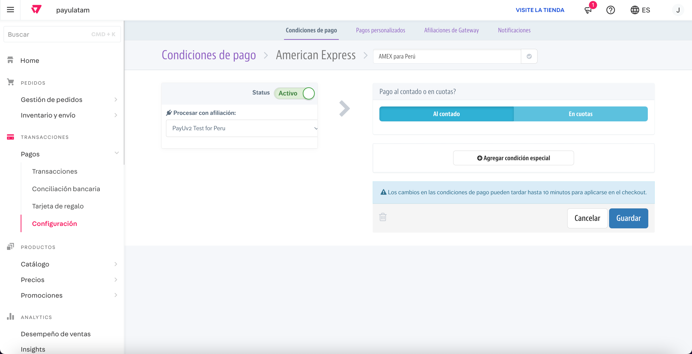
- Haz clic en Guardar. Cuando hayas creado la condición de pago, esta se lista en la pestaña Condiciones de pago.
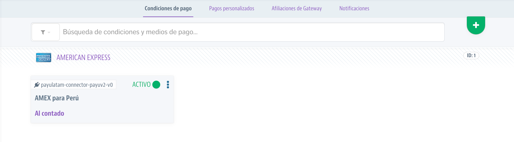
Configurar tarjetas de marca compartida o privada
Las tarjetas de marca compartida o privada son tarjetas emitidas por una tienda o marca en asocio con una red como AMEX, VISA, MasterCard, etc. Sigue estas instrucciones para agregar este medio de pago en tu tienda VTEX.
- En la opción de Configuración (Transacciones > Pagos > Configuración), ve a la pestaña Pagos personalizados.
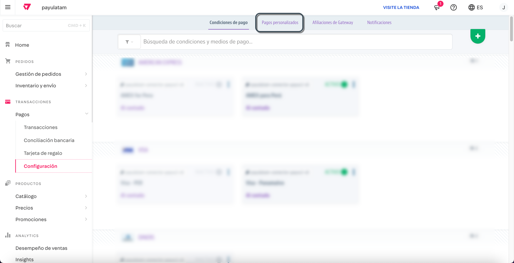
- En esta pestaña, tienes cinco (5) espacios disponibles para configurar tarjetas de marca compartida y privada. En este ejemplo, configuraremos la tarjeta colombiana Codensa que es una tarjeta de marca privada.
Haz clic en cualquiera de las casillas disponibles en la sección Tarjeta de tienda (red propia).
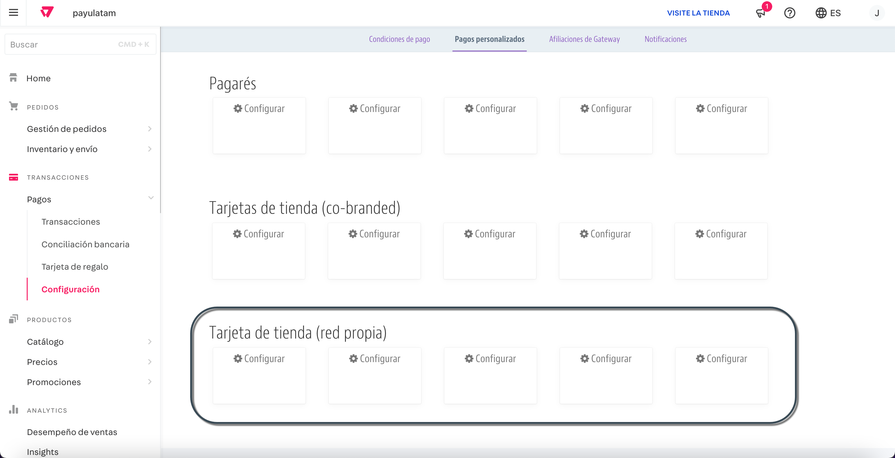
- Ingresa la siguiente información utilizando las minúsculas y mayúsculas mostradas.
- Nombre:
Codensa. - Descripción:
Codensa - Rangos de BIN:
590712-590712 - Código de pago del adquirente:
codensa
Nota
Para tarjetas de marca compartida, debes seleccionar la marca de la misma.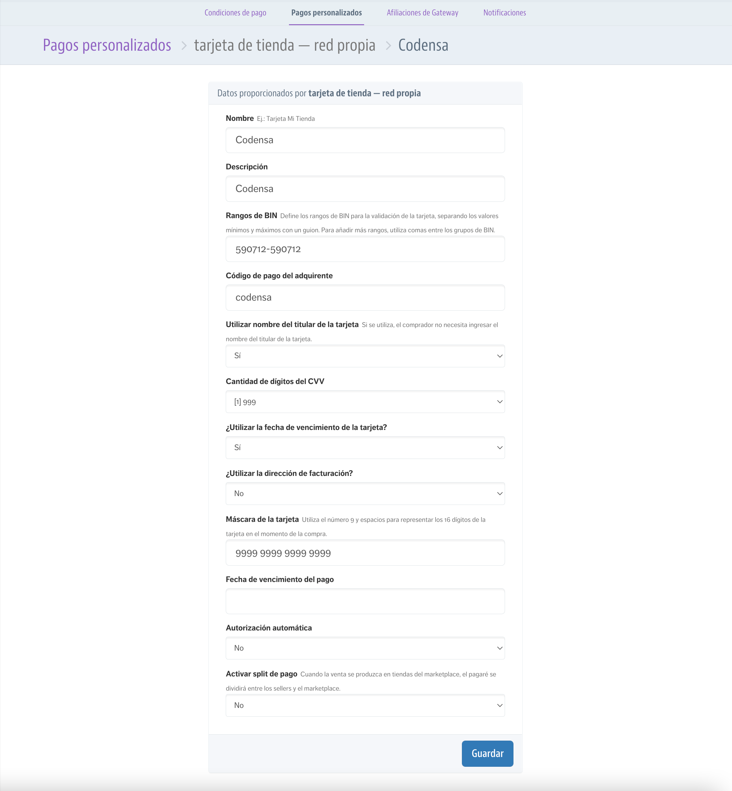
Los valores restantes se pueden dejar por defecto. Utiliza los siguientes valores para configurar tarjetas de marca privada y de marca compartida.
| País | Nombre | Descripción | Rangos de BIN | Código de pago del adquirente |
|---|---|---|---|---|
 |
Argencard | Argencard | 501105-532362 |
argencard |
|
Cabal | Cabal | 60423,60400,589657 |
cabal |
|
Cencosud | Cencosud | 603493-603493 |
cencosud |
|
Naranja | Naranja | 589562 |
naranja |
|
Shopping | Shopping | 603488 |
shopping |
 |
Codensa | Codensa | 590712-590712 |
codensa |
Para más información de cómo configurar tarjetas de marca compartida y de marca privada, consulta el centro de ayuda de VTEX.
- Haz clic en Guardar. Cuando se haya creado el pago personalizado, serás redirigido a la opción para crear una nueva Condiciones de pago. Esta condición de pago se crea tal y como se explica en la sección Configurar tarjetas de crédito o débito.
Configurar medios de pago en efectivo
Como los medios de pago en efectivo requieren que el cliente pague en oficinas físicas, puedes configurar este medio de pago en VTEX como Pagarés.
Nota
No se requiere este procedimiento para Boleto bancario en Brasil, simplemente configura este medio de pago como una condición de pago.Cuando configuras un método de pago en efectivo, tus clientes son redirigidos al checkout de PayU para que descarguen el comprobante de pago y paguen en la oficina física respectiva. Sigue las instrucciones a continuación para agregar este método de pago a su tienda VTEX.
- En la opción de Configuración (Transacciones > Pagos > Configuración), ve a la pestaña Pagos personalizados.
- En esta pestaña, tienes cinco (5) espacios disponibles para configurar pagos en efectivo. En este ejemplo, configuraremos
OXXO, un medio de pago en efectivo mexicano.
Haz clic en cualquiera de las casillas disponibles en la sección Pagarés.
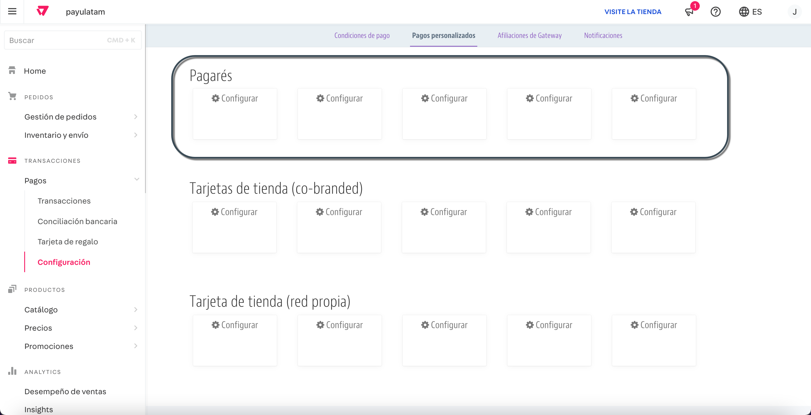
- Ingresa la siguiente información para el medio de pago en efectivo.
- Nombre: En este parámetro, necesitar utilizar el valor mostrado aquí en la columna
Parámetro paymentMethod. Para este ejemplo, configuramosOXXO. - Descripción: Ingresa la descripción que desea mostrar cuando el cliente seleccione este método de pago. Este parámetro es opcional.
- Validez del pagaré: ingresa el número de días antes de que venza el pago en efectivo. Por defecto, este valor se asigna a siete días.
Dejas los demás parámetros con sus valores por defecto
- Haz clic en Guardar. Cuando se haya creado el pago personalizado, serás redirigido a la opción para crear una nueva Condiciones de pago. Esta condición de pago se crea tal y como se explica en la sección Configurar tarjetas de crédito o débito.
Probar la integración
Una vez que hayas configurado las Condiciones de pago para tus medios de pago, se recomienda probar la integración antes de comenzar a recibir transacciones reales. Como requisito previo, asegúrate de que tu cuenta de PaymentsOS esté en modo TEST, así como el Selector de ambiente en tu Afiliación de Gateway.
- En el admin de VTEX, haz clic en VISITE LA TIENDA en el panel superior.
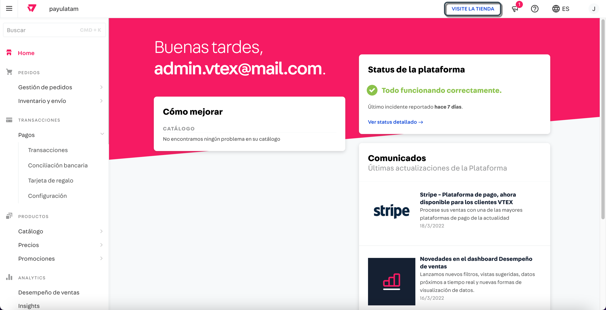
- Se abre la tienda configurada para tu cuenta de VTEX. Selecciona cualquier producto y haz clic en comprar.
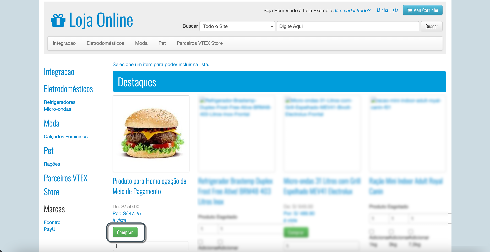
- En el carrito de compras, haz clic en el botón realizar pedido.
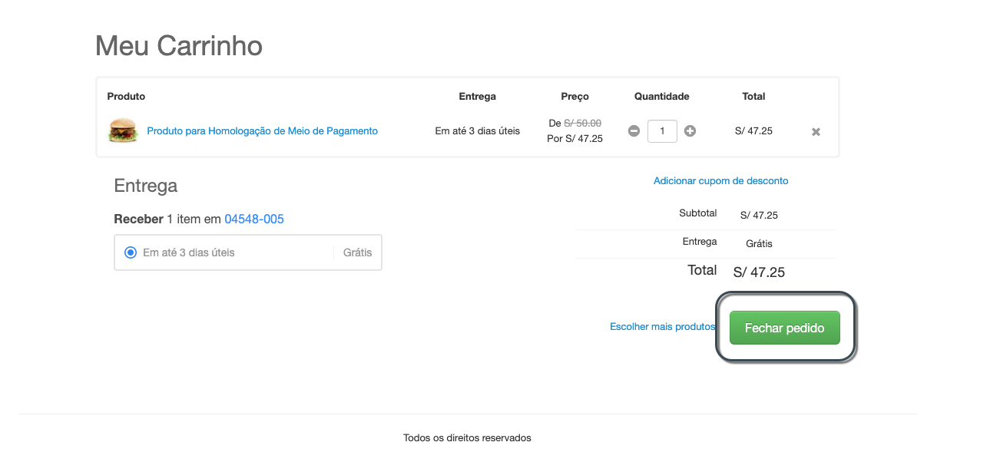
- En la sección de pago, aparecen los medios de pago agrupados por tipo. Selecciona el que deseas probar e ingresa los datos de prueba. Encuentra aquí algunos números de tarjeta de prueba e información para probar los estado.
Por último, haz clic en Completar compra.
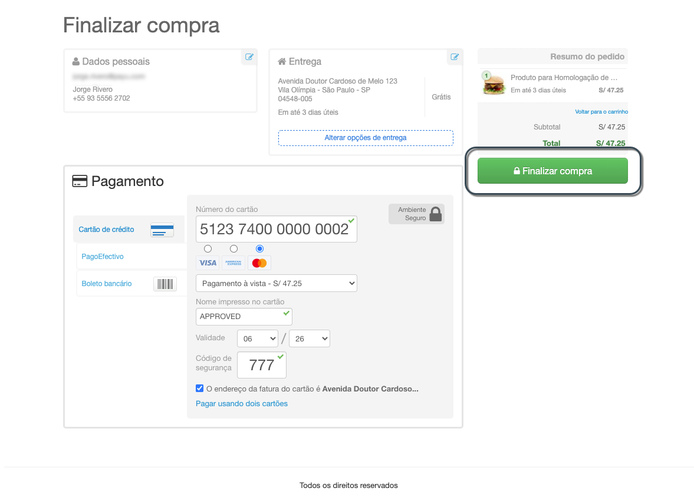
Una vez aprobada la compra puedes verificarla en:
- Admin de VTEX: Pagos > Transacciones.
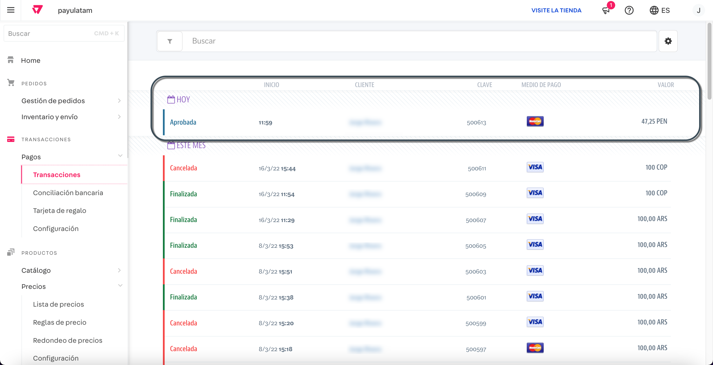
-
Panel de control de PaymentsOS: Pagos > Buscar.
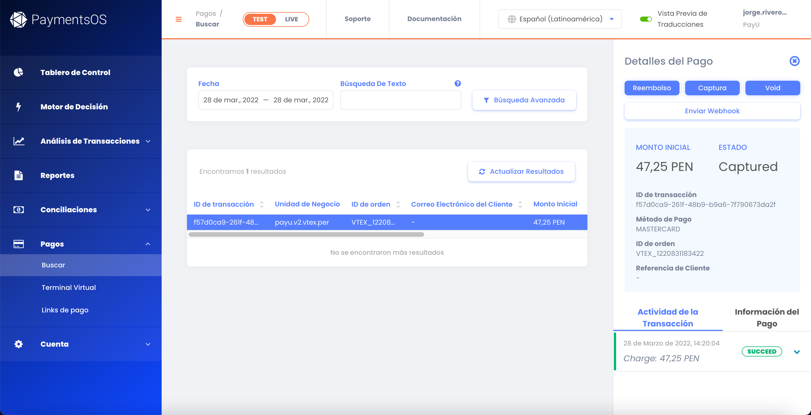
El parámetro ID Externa de la Transacción dentro de Actividad de la Transacción es el OrderID de PayU. -
Módulo PayU: en el Reporte de Ventas.
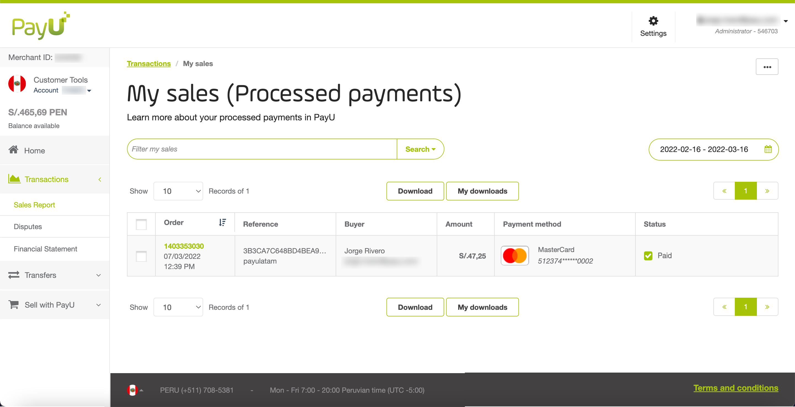
- API de Consultas utilizando el parámetro ID Externa de la Transacción como OrderID.
Probar flujos de dos pasos
Cuando hayas configurado tu Afiliación de Gateway para procesar transacciones en flujos de dos pasos, los fondos autorizados en la tarjeta de crédito no son capturados hasta que solicites la captura explícitamente. Para solicitar la captura, necesitas facturar la orden.
Para facturar una orden, localiza la transacción en el Admin de VTEX (Pagos > Transacciones) y haz clic en ella. Después, haz clic en el botón Pedido en la esquina superior derecha.

Desplázate hasta la sección Paquete y haz clic en Facturar paquete.
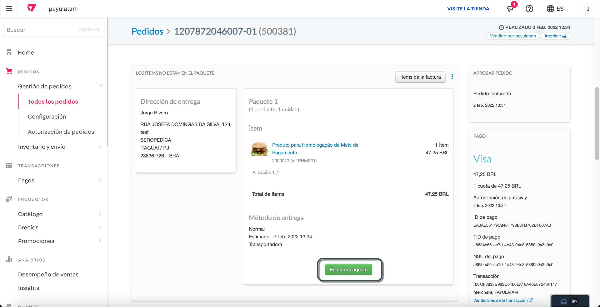
Proporciona la información de la factura y haz clic en Enviar factura al final del panel. Una vez enviada la factura al cliente, se cobra en la tarjeta del cliente el importe autorizado.
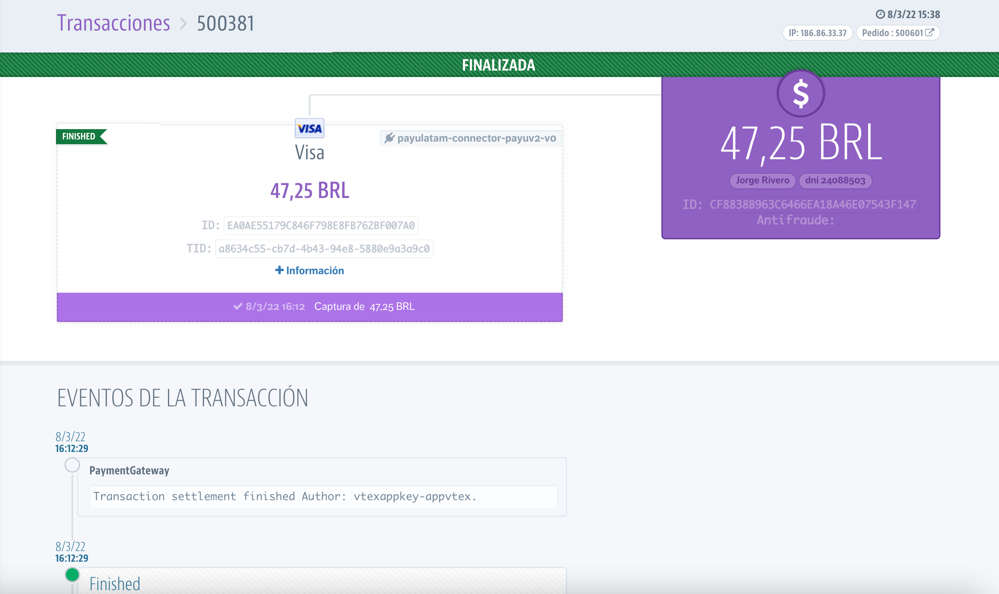